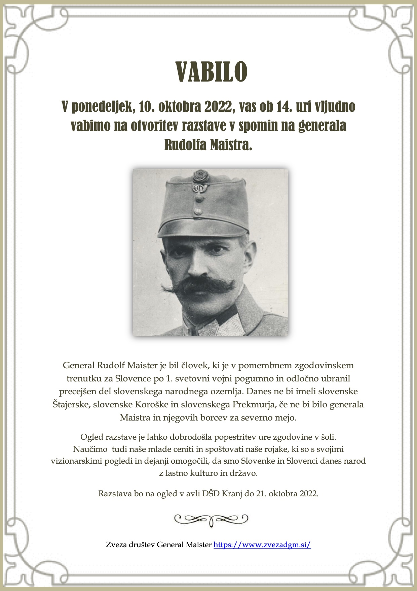
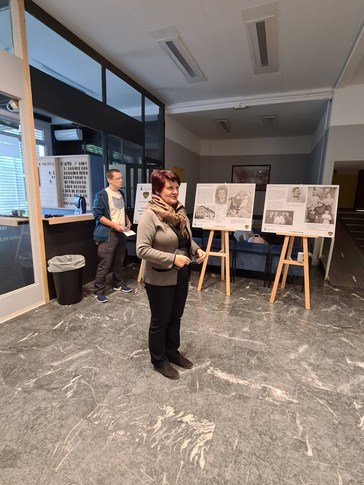
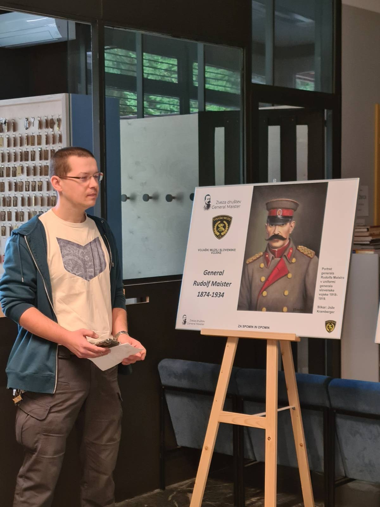
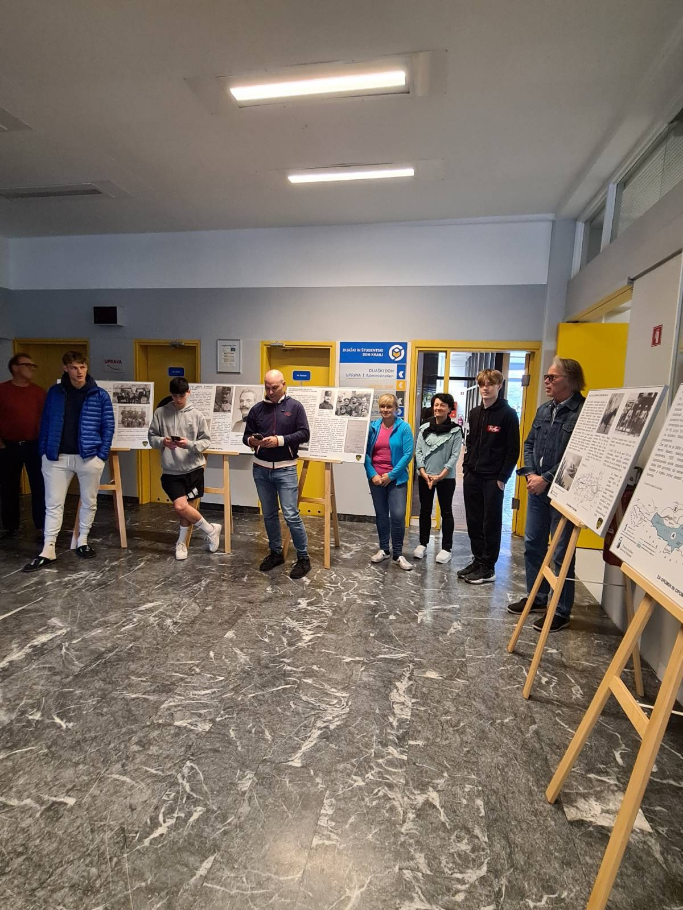
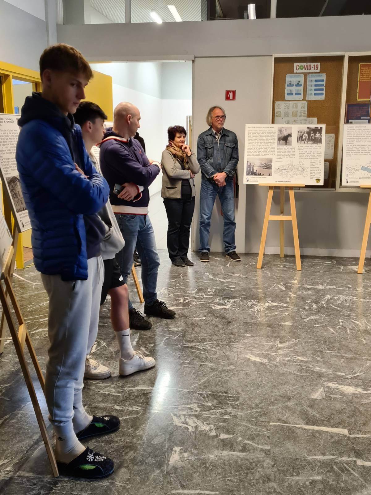
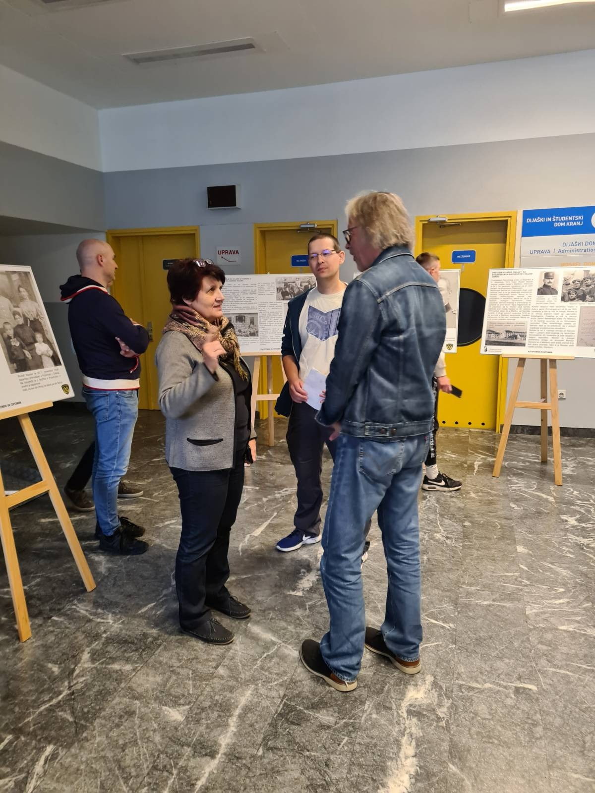
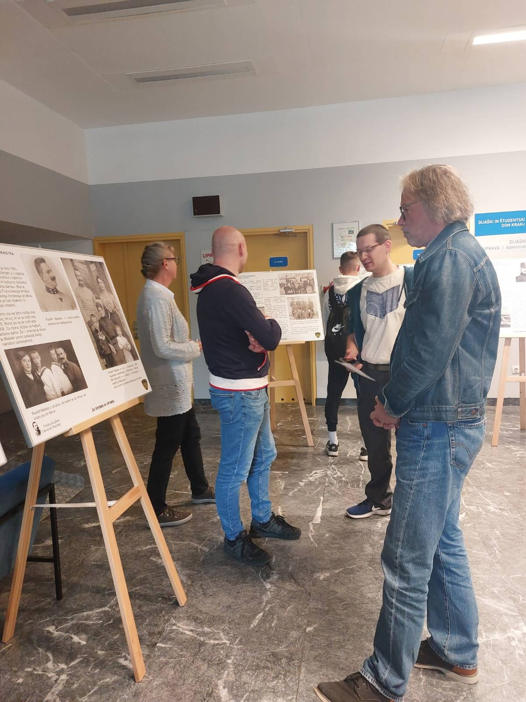
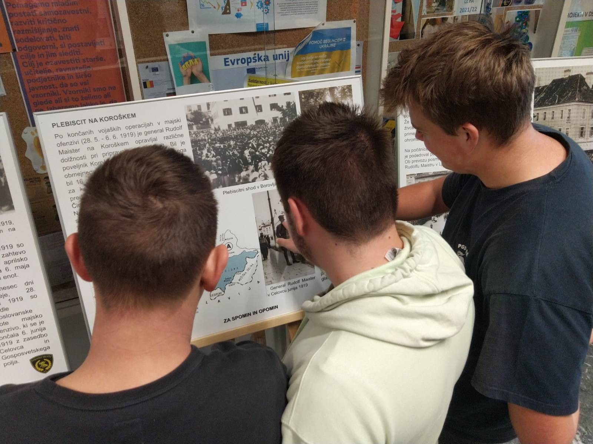
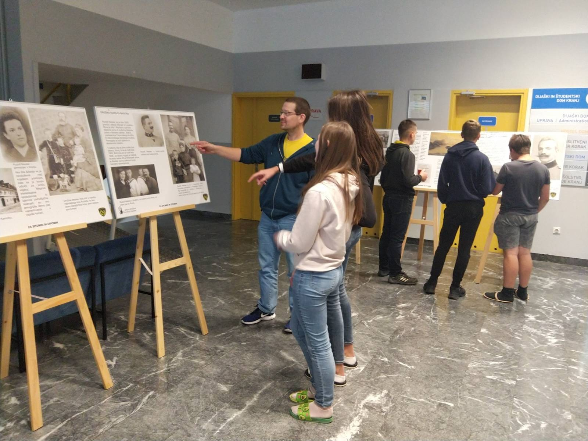

Razstava o Rudolfu Maistru v Dijaškem in študentskem domu v Kranju od 10. do 21. oktobra 2022

Rudolf Maister. Ko se pomisli na čas, v katerem je živel in ustvarjal, na dogodke, ki so ga, skupaj z ostalimi posamezniki, potegnili vase, ni mogoče spregledati vzporednice s posameznimi vrsticami slovenske narodne pesmi »Oj, ta soldaški boben«:
OJ, TA SOLDAŠKI BOBEN, TA BO MENI VEL’KI ZVON
OJ, TA VOJAŠKA SABLJA, TA BO MENI SVETLA LUČ
OJ, TA MI BO SVETILA …
V tistem času, ko so soldaški bobni še vedno ropotali, so se južnoslovanski narodi avstro-ogrske monarhije zmogli odločiti, da stopijo na svojo državno pot. Tako je bila 29. oktobra 1918 razglašena Država Slovencev, Hrvatov in Srbov z Narodno vlado v Ljubljani. V tistem času, ko so žene, matere, družine in vojaki že neutrudno čakali, da soldaški bobni končno utihnejo, pa je v našo in za našo skupno zgodovino in usodo posegel Rudolf Maister. Ta je s pogumom, neustrašnostjo in karizmatičnostjo uspel zbrati istomisleče sile in v mesecu dni od ustanovitve Države Slovencev, Hrvatov in Srbov zavarovati del slovenskega narodnostnega ozemlja, katerega ključno mesto je bil Maribor z zelenimi travniki v okolici.
Maistru in njegovim soborcem je tako z vojaško sabljo delno uspelo zavarovati predloge mlade in mednarodne nepriznane države, ki so sledili točkam ameriškega predsednika Wilsona, zlasti točki o samoodločbi narodov, z mejo na nacionalni meji. Slednje ni bilo popolnoma doseženo, a je bila meja postavljena tako, da je ni bilo mogoče spremeniti tudi z naslednjim svetovnim spopadom.
Od 10. do 22. oktobra 2022 je priložnostna razstava o generalu Rudolfu Maistru gostovala v prostorih Dijaškega in študentskega doma Kranj. Ob otvoritvi razstave sta povabljene nagovorila ravnateljica Judita Nahtigal in vzgojitelj mag. Aleš Žlebnik. Tako je bilo omogočeno dijakom, študentom, učencem sosednjih šol in skupnosti omogočiti vpogled v življenje in delo tega vizionarja, ki je poleg vseh področij ustvarjanja lahko imenovan tudi kot začetnik slovenskih oboroženih sil.
Slednje ponazarjata kitici Simona Janka, ki sta danes tudi himna Slovenske vojske. Ampak če ju dobro preberemo - ali ni mogoče v njih videti postopanje generala Rudolfa Maistra in soborcev v trudu, da nam priborijo zelene travnike našega doma?!
NAPREJ, ZASTAVA SLAVE,
NA BOJ, JUNAŠKA KRI!
ZA BLAGOR OČETNJAVE
NAJ PUŠKA GOVORI!
Z OROŽJEM IN DESNICO
NESIMO VRAGU GROM,
ZAPISAT V KRI PRAVICO,
KI TERJA JO NAŠ DOM.
NAPREJ! NAPREJ!
mag. Aleš Žlebnik, vzgojitelj v DŠD Kranj







